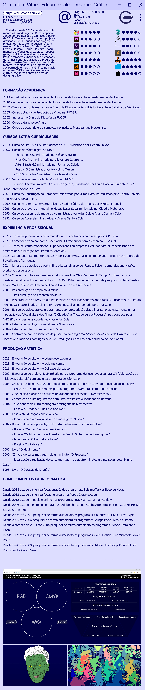

Portfólio de Eduardo Cole - Designer
Projetos gráficos 2D, 3D, interativos e contemplativos


Cel: +55 (11) 99552-8114E-mail: ducole@gmail.com
Portfólio de Eduardo Cole - Designer
Projetos gráficos 2D, 3D, interativos e contemplativos
Cel: +55 (11) 99552-8114E-mail: ducole@gmail.com
Programas Gráficos
| Estáticos | Photoshop |
Illustrator |
Indesign | HTML 5 e CSS |
| Dinâmicos | Final Cut | After Effects |
3dsmax |
Zbrush |
Programas de Áudio
|
Reason - |
Audacity - |
Sistemas Operacionais
Windows - |
MacOS - |
CV
Curriculum Vitae de 2024

×